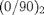
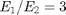
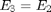
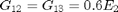
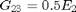
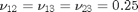
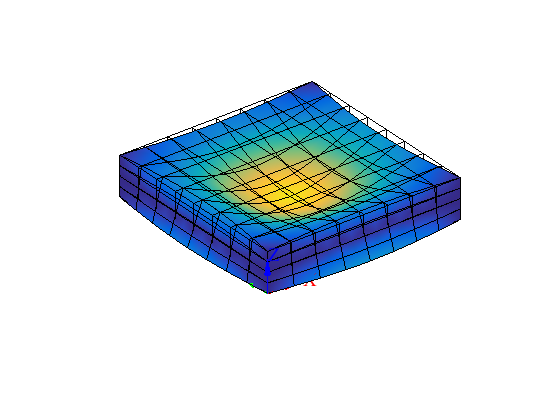

Vibration analysis of laminated composite plate
Contents
Link to the m-file.
Description
Free-vibration problem is solved for laminated composite square plate, simply-supported on the circumference.
Reference: Analytical solutions for free vibration of laminated composite and sandwich plates based on the higher-order refined theory, T. Kant and K. Swaminathan, Composite Structures 53 (2001) 73-85.
The plate lamination considered here is one particular case from the cited reference, , and we consider orthotropic material properties for individual layers with , , , , .
The plate is discretized with solid elements. The simple support condition is approximated by distributed rollers on the boundary.
Solution
function pub_KS_sandwich_vibration_ss
Material: The data from the above cited article. The ratio of the Young's moduli is variable, and the number of layers also varies. Here we consider E1/E2 = 3, and four layers with a layup (0/90)_2.
L_t =5;% span to thickness ratio (a/h in the paper) E1_E2 = 3;% this ratio is variable angles =[0 90 0 90];% Anti-symmetric layup
The analytical formula gives the non-dimensional fundamental frequency from a 3-D elasticity solution as (Table 2):
omega_bar=6.5455; % the fundamental frequency multiplier
Compute all the other input parameters. Because the reference solution is given in terms of a non-dimensional fundamental frequency, we are free to choose the numerical values of the input parameters as long as we observe the given ratios.
E1=181000; E2=E1/E1_E2; E3=E2; G12=0.6*E2; G13=0.6*E2; G23=0.5*E2;% MPa nu12= 0.25; nu13= 0.25; nu23= 0.25; rho =1.5e-9; L=200; W=200; t=L/L_t;% mm
Fundamental frequency in hertz
omega_fundamental =omega_bar*t/W^2*sqrt(E2/rho);
f_fundamental =omega_fundamental/2/pi
f_fundamental = 6.6069e+03
The chosen mesh parameters.
nLayers =length(angles);
[nL,nW] =adeal(2*[4,4]);% in-plane numbers of elements
nts= 1*ones(length(angles));% number of elements per layer
ts= t/length(angles)*ones(length(angles));% layer thicknesses
The mesh is generated using the specialized function H8_composite_plate which generates the solid elements within the plate layer-by-layer and marks the elements of each layer with the layer number as their label.
[fens,fes] = H8_composite_plate(L,W,ts,nL,nW,nts);;
The chosen elements are the serendipity hexahedra.
[fens,fes] = H8_to_H20(fens,fes);
The material orientation matrix is determined by the layer number.
function Rm = LayerRm(XYZ, ts, label)% label equals the layer number here Rm= rotmat(angles(label)/180*pi* [0,0,1]); end
We are ready to bundle up the model data so they can be passed to the solver.
clear model_data model_data.fens =fens;% the finite element node set
Note that we are specifying the material parameters and the material orientation matrix. The integration rule is going to be used for both the stiffness matrix and the mass matrix.
clear region region.property = 'orthotropic'; region.rho =rho; region.E1 =E1; region.E2 =E2; region.E3 =E3; region.G12=G12; region.G13=G13; region.G23=G23; region.nu12=nu12; region.nu13=nu13; region.nu23=nu23; region.fes= fes;% set of finite elements for the interior of the domain region.integration_rule = gauss_rule (struct('dim', 3, 'order', 2)); region.Rm =@LayerRm; model_data.region{1} =region;
The support conditions approximate simply-supported edges. In particular, the reference paper stipulates that plate edges parallel to the X-axis are not allowed any displacement perpendicular to the plane of the plate (Z displacement) and no displacement tangential to the edge (Y displacement).
clear essential essential.component= [2,3]; essential.fixed_value= 0; essential.node_list = [fenode_select(fens, struct('box', [0,0,-Inf,Inf,-Inf,Inf],... 'inflate',0.001*t)),fenode_select(fens, struct('box', [L,L,-Inf,Inf,-Inf,Inf],... 'inflate',0.001*t))]; model_data.boundary_conditions.essential{1} = essential;
The plate edges parallel to the Y-axis are not allowed any displacement perpendicular to the plane of the plate (Z displacement) and no displacement tangential to the edge (X displacement).
clear essential essential.component= [1,3]; essential.fixed_value= 0; essential.node_list = [fenode_select(fens, struct('box', [0,L,0,0,-Inf,Inf],... 'inflate',0.001*t)),fenode_select(fens, struct('box', [0,L,W,W,-Inf,Inf],... 'inflate',0.001*t))]; model_data.boundary_conditions.essential{2} = essential;
The modal analysis solver is now ready to be invoked.
model_data = deformation_linear_modal_analysis(model_data);
The modal-plot algorithm can be called to produce the plot of the fundamental mode.
model_data.postprocessing.u_scale= 2;
model_data.postprocessing.modelist= 1;
mmodel_data=deformation_plot_modes(model_data);
Mode 1, frequency 6566.0502
Discussion
The fundamental frequency is extracted from the updated model_data data structure.
f=model_data.Omega(1)/2/pi;
disp(['Fundamental frequency ' num2str(1) ': ' num2str(f) ' [Hz]' ', f/f_analytical=' num2str(100*f/f_fundamental) '%']);
Fundamental frequency 1: 6566.0502 [Hz], f/f_analytical=99.3821%
The accuracy of less than 1% error seems to be quite adequate. However, if we refine the mesh our results will converge to a frequency that is approximately .62% lower than the reference solution. Since all the cited numbers in the Reference article are in fact lower (around 1% lower) than the 3-D elasticity solution, and since our numerical method is in agreement with the other three cited solutions, we may venture a guess that the 3-D elasticity solution may be in error.
end